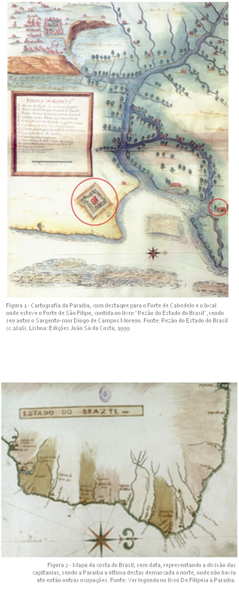
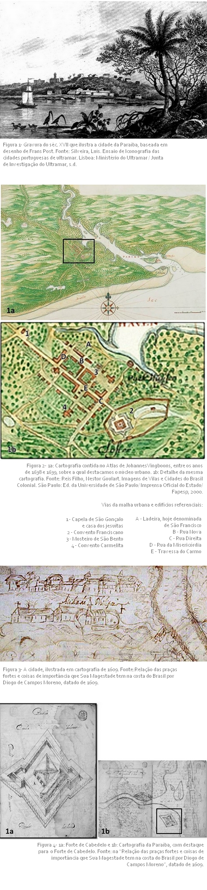
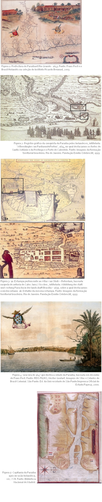
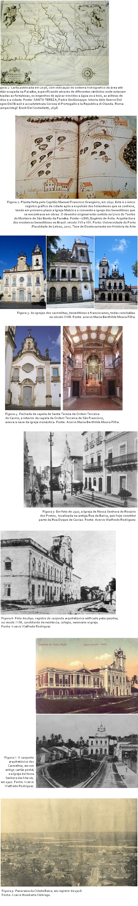
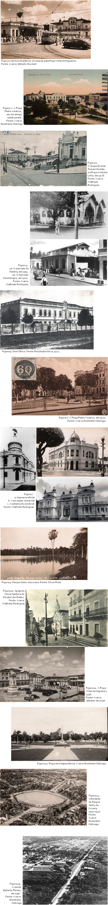

|
A Criação da Capitania da Paraíba
Até o final do século XVI, grande parte da região setentrional do litoral brasileiro, onde as capitanias hereditárias não prosperaram, continuava despovoada, sendo explorada pelos franceses, aliados às tribos indígenas locais.
Para assegurar a posse efetiva daquelas terras para Portugal, uma das medidas adotadas foi a criação da Capitania da Paraíba, visando o poder régio afastar os franceses e os temidos índios Potiguaras das margens do Rio Paraíba (Figura 1). Ocorreu a primeira expedição de conquista em 1575, sob o comando do Ouvidor-Geral Fernão da Silva. As duas expedições seguintes – nos anos de 1579 e 1582 – foram comandadas por Frutuoso Barbosa, rico mercador de pau-brasil estabelecido em Pernambuco, nomeado pelo rei D. Henrique como capitão-mor da conquista da Paraíba. Frutuoso Barbosa também não obteve a conquista daquela região, e perante estes insucessos, o governador geral do Brasil, Manuel Teles Barreto, mandou que fossem para Pernambuco o ouvidor geral, Martim Leitão, e o provedor Martim Carvalho, a fim de reunir gente e recursos para outra expedição.
Resultou que em 1584, foi estabelecido na margem norte do Rio Paraíba o Forte de São Filipe, o qual foi abandonado em 1585, por não resistir mais ao cerco constante dos índios Potiguaras e dos franceses.
Nesta época estavam as margens do Rio Paraíba dominadas por índios Potiguaras, assentados ao norte, e Tabajaras, situados ao sul, os quais mantinham aliança e se contrapunham à ocupação portuguesa naquela região.
Tentou o ouvidor Martim Leitão estabelecer diálogo com Piragibe, chefe dos Tabajaras, na tentativa de separá-los dos Potiguaras e assim os ter por aliados. As negociações não progrediram, devido à desconfiança do indígena, já uma vez traído pelos portugueses, e o seu receio de aniquilamento por parte dos Potiguaras, em maior número, caso aqueles soubessem de uma traição.
Após a queda do Forte de São Filipe, chegaram à Olinda emissários do cacique Tabajara, com o objetivo de solicitar socorro e oferecer aliança ao Ouvidor Geral, pois vinham sofrendo guerra declarada por parte dos Potiguaras.
A 2 de agosto de 1585, partiram de Pernambuco, em direção à Paraíba, João Tavares, escrivão da Câmara e juiz de órfãos de Olinda, com apenas 20 homens e os emissários de Piragibe. Tinham por meta firmar um acordo de paz com os Tabajaras, criando as condições necessárias para enfrentar os Potiguaras. A 5 de agosto, João Tavares desembarcou à margem sul do Rio Sanhauá - afluente do Rio Paraíba, e escolheu o local para a construção de um forte. Esta data foi considerada como marco da fundação da cidade, batizada de Nossa Senhora das Neves, invocação da santa do dia (Figura 2).
|

|
|
A fundação da cidade e sua formação até o início do século XVII
Com as notícias das conquistas realizadas por João Tavares, a 15 de outubro, partiu de Pernambuco Martim Leitão, acompanhado de pedreiros, carpinteiros, entre outros oficiais, para tratar da instalação de uma povoação na Paraíba. Aprovando o sítio escolhido por João Tavares para a fundação da cidade, a 4 de Novembro teve início a construção do forte, “de cento e cincoenta palmos” que constituiu o ponto inicial daquele núcleo de povoamento.(Figura 1)
Apesar da constante ameaça que representava a presença dos índios Potiguara, aos poucos a cidade foi se constituindo. Assentada em uma encosta, tinha por porta de entrada o Rio Sanhauá, acesso para as embarcações que ali chegavam. No alto da colina, foi edificada uma pequena capela que era importante ponto de referência para a cidade, sendo em pouco tempo elevada à condição de igreja matriz. Assim, foi definida a sua estrutura inicial, dividida entre a cidade alta – o lugar da matriz - e a cidade baixa, à margem do rio, área também denominada de Varadouro (Figura 2).
Fazendo a ligação entre o Varadouro e a cidade alta, surgiu a ladeira, hoje denominada de São Francisco (A), caminho através do qual homens e mercadorias circulavam entre o porto e o núcleo administrativo e residencial situado em cima da encosta. Na cidade alta, foi aberta a Rua Nova (B), a qual tinha início à porta da igreja matriz, sendo ali edificados a Casa de Câmara e Cadeia. Estes dois logradouros constam entre os primeiros a compor a nascente malha urbana da cidade, que a partir de 1588, passou a se chamar Filipéia de Nossa Senhora das Neves, em homenagem ao rei de Espanha e Portugal.
Significativo para a formação do núcleo urbano e para a colonização da capitania foi a implantação das ordens religiosas na cidade. Primeiro vieram os padres da Companhia de Jesus e se instalaram, ao sul, na pequena capela de São Gonçalo, localizada próximo à aldeia dos Tabajaras (1), uma vez que trabalhavam na catequese destes índios.
Em 1589, chegaram à Paraíba os franciscanos, que receberam do governo da capitania um terreno nas proximidades da igreja matriz, onde edificaram sua casa.(2) Em 1600 os frades da Ordem de São Bento (3) iniciavam a construção de seu mosteiro e igreja, implantados no início da Rua Nova, em frente ao largo que antecedia a Matriz. Possivelmente, também em 1600, os carmelitas (4) edificavam seu mosteiro, situado próximo à Igreja Matriz.
Em 1595, a Igreja da irmandade da Santa Casa de Misericórdia, provavelmente, estava em construção, obra impulsionada por Duarte Gomes da Silveira, importante senhor de engenho. Observa-se que as casas religiosas, bem como grande parte das residências da cidade ficavam situadas no alto da colina, configurando uma imagem que demonstrava estar a Filipéia assumindo seu caráter de centro urbano, com os “edificios nobres de pedra e cal que cada dia se aumentão”, conforme registrou o sargento-mor do Brasil, Diogo de Campos Moreno, no ano de 1616. (Figura 3)
Na cidade alta, além da Rua Nova, surgiu a Rua Direita (C), paralela àquela, com traçado regular, e em formação por volta do ano de 1600. Havia algumas vias transversais – a Rua da Misericórdia (D), a Travessa do Carmo (E), cujo trajeto estava associado à posição assumida pelos respectivos edifícios religiosos na malha urbana.
Importante foi a construção da nova Casa de Câmara e Cadeia, a frente da qual foi aberto o Largo da Câmara, em 1610, obedecendo à regularidade do traçado ortogonal que caracterizava a cidade alta. Este fato denotava o progresso da cidade e criava espaços individualizados para os dois poderes instalados na Filipéia: a administração portuguesa e a Igreja Católica.
Vale ressaltar que embora a cidade tivesse sua origem associada ao forte edificado em 1585, a defesa da Paraíba não estava diretamente vinculada à Filipéia, uma vez que a principal estrutura defensiva – o Forte do Cabedelo - estava situado na barra do Rio Paraíba. (Figura 4)
|

|
|
O período da invasão holandesa e a cidade frederica
Quando da invasão holandesa ao nordeste do Brasil, a Paraíba era a terceira capitania em ordem de grandeza e importância econômica na colônia, sendo precedida pela Bahia e Pernambuco. Era esta riqueza e prosperidade que atraía os invasores.
Estes, após fracassadas investidas, ganharam por fim o domínio sobre a Paraíba, em 1634, apesar do reforço do esquema defensivo da capitania com a construção dos fortes de Santo Antônio e da Restinga, e das baterias que resguardavam o entorno do Forte de Cabedelo. (Figura 1 e 2)
Nesta época a Paraíba contava com 18 engenhos produtivos, dos quais oito foram abandonados por seus proprietários e confiscados pela Companhia das Índias Orientais. Uma vez que os holandeses tinham por meta o rentável comércio do açúcar, se justifica que tenham investido na recuperação das estruturas necessárias a esta economia, enquanto trabalharam muito pouco pela melhoria da cidade.
Um dos governadores holandeses da Paraíba, durante o domínio holandês, deixou registrada sua impressão sobre a capitania e a cidade Filipéia, que teve seu nome alterado para Frederica (Frederickstadt) em honra de Frederico Henrique, Príncipe de Orange.
Descrevendo-a, em 1639, Elias Herckman se referiu à existência de seis igrejas, sendo três ligadas aos conventos de São Francisco, de São Bento e do Carmo, e mais as igrejas da Matriz, Misericórdia e de São Gonçalo. (Figura 3)
O convento de São Francisco era o maior e o mais bonito. Dele se apoderaram os holandeses, fortificando-o para dar abrigo ao governador e as tropas. Foi levantada uma trincheira em torno dele “com uma bateria que se collocou deante da egreja para dominar a entrada ou avenida”.
Os frades carmelitas se encontravam no seu convento até a época deste relato, porém o mesmo não estava “ainda de todo acabado”. Estava inacabado, também, o convento de São Bento, tendo as paredes externas levantadas, mas sem coberta. Os holandeses fizeram deste um aquartelamento por considerarem o lugar apropriado para servir de fortificação diante da cidade. Construíram uma trincheira em torno do convento e aí se abrigaram até 1636, quando passaram a ocupar o convento de São Francisco, demoliu-se então a trincheira, e entregaram aos frades as paredes do convento, como estavam. “Mas até esta data elles nada mais teem ahi construido”.
Sobre as demais igrejas existentes na cidade, Elias Herckman disse ser a Matriz a principal delas e “uma obra que promette ser grandiosa, mas até o presente não foi acabada, e assim continua, arruinando cada vez mais de dia em dia”. A Igreja da Misericórdia estava quase acabada e os portugueses a utilizavam em lugar da matriz. Por fim, referiu-se a “uma simples capella com a denominação de São Gonçalo” que assinalava o limite extremo da cidade. (Figura 4)
A Frederica se estendia desta capela até o convento dos franciscanos, com um comprimento de aproximadamente “um quarto de hora de viagem”, mas se achava “escassamente edificada e com muito terreno desocupado”. Entre os demais edifícios apenas lhe chamou a atenção “a casa do Concelho com a praça do mercado” onde estava o pelourinho.
Até aquele ano de 1639, as intervenções realizadas pelos holandeses na cidade restringiam-se à fortificação do convento dos franciscanos e à construção de “um armazem grande e capaz com um bonito mole ou dique no Varadouro, onde atracassem as embarcações, e se embarcasse ou desembarcasse o assucar, para commodo e utilidade dos mercadores”. Fica evidente o pequeno investimento feito pelos holandeses na Paraíba, onde o que lhes atraía era a produção do açúcar.
|

|
|
A Cidade da Paraíba entre o final do século XVII e o século XVIII
A guerra para a expulsão dos holandeses deixou a Paraíba em precária situação econômica. A imagem apreendida era de uma total ruína: plantações devastadas, povoações e engenhos destruídos. Os primeiros anos, a partir de 1654, foram consumidos na recuperação dos engenhos, ocorrendo isto a passo lento, devido à escassez de recursos materiais e humanos (Figura 1).
Além disso, o açúcar que continuava sendo o principal produto da capitania sofria a concorrência das Antilhas, para onde os holandeses haviam levado sua experiência na produção açucareira, fato que derrubou o monopólio comercial do açúcar brasileiro. Como se não bastasse, alguns longos períodos de seca devastavam a agricultura, dizimavam rebanhos e matavam os escravos.
Diante deste quadro, se conclui o quanto difícil e demorado foi o processo de recuperação da capitania, e particularmente da cidade que passara a se chamar Cidade da Parahyba, logo após a expulsão dos holandeses (Figura 2). Os parcos investimentos possíveis eram feitos na reconstrução das estruturas produtivas e no sistema de defesa da capitania, uma vez que por muito tempo ainda era esperada nova invasão.
Apenas para ilustrar o quanto foi preciso aguardar para dar princípio a obras imprescindíveis na cidade, registra-se que somente em 1662, teve início a reconstrução da Igreja Matriz, que atravessou todo o século XVIII, pois os recursos disponíveis nunca eram o suficiente para a concluir.
Apesar deste contexto de limitações, no início do século XVIII a cidade ganhou alguns novos edifícios. Havendo sido denunciada, desde 1694, a precária forma de armazenar a pólvora na cidade, em 1710, ocorreu a conclusão da nova Casa da Pólvora edificada na Ladeira, hoje denominada de São Francisco.
Mais rico foi o patrimônio edificado pela Igreja, o qual trouxe ares de monumentalidade para a cidade, ganhando destaque os edifícios religiosos que sobressaíam perante a modesta arquitetura praticada na cidade. Na segunda metade do século XVII, começaram a retornar à Paraíba as ordens religiosas, chegando primeiramente os beneditinos, e em seguida os franciscanos, carmelitas e jesuítas.
Foram muitas as dificuldades enfrentadas por estas ordens religiosas para retomar a construção e conclusão dos seus conjuntos arquitetônicos, uma vez que com a pobreza da capitania não podiam contar com as esmolas dos fiéis. Mas superando todos os obstáculos, enfrentaram longos períodos de obras que atravessaram todo o século XVIII, e só nas últimas décadas daquela centúria estavam sendo concluídas estas casas religiosas. Mesmo assim, conseguiram erguer conventos que marcaram presença pela dimensão que ganharam, e igrejas que exibiam um requinte arquitetônico e artístico (Figura 3).
A estes conjuntos arquitetônicos edificados pelas ordens religiosas, somavam-se as igrejas das irmandades que surgiam como consequência do crescimento e estratificação social da população. Entre estas irmandades, duas reuniam os homens mais ricos e nobres: a ordem terceira de São Francisco e a ordem terceira do Carmo, as quais ergueram suas igrejas em anexo às respectivas ordens monásticas (Figura 4).
As demais irmandades edificaram suas igrejas isoladas, em sítios que vão acabar se tornando pontos referenciais para a expansão da malha urbana. Entre estas, a notícia mais antiga diz respeito à construção da Igreja de Nossa Senhora do Rosário dos Pretos (Figura 5), a qual já estava iniciada em 1697, localizando-se na Rua da Baixa – trecho pouco habitado da Rua Direita, entre a Igreja da Misericórdia e o conjunto dos jesuítas (Figura 6).
A 24 de Setembro de 1729, foi lançada a primeira pedra da igreja da Irmandade de Nossa Senhora das Mercês, sagrada a 21 de Setembro de 1741, a qual reunia os homens pardos e livres. Em frente a esta se formou o Largo das Mercês até onde se prolongava a Rua da Cadeia, que tinha início em frente ao conjunto arquitetônico dos carmelitas (Figura 7).
Por sua vez, a construção da igreja da Irmandade de Nossa Senhora Mãe dos Homens Pardos, em andamento em 1767, foi um elemento indutor da expansão da cidade em direção ao futuro bairro de Tambiá, local onde havia uma fonte de água com o mesmo nome que abastecia parte da população atraindo-a para ali.
Enquanto estas mudanças se processavam na cidade, a situação econômica da capitania se agravava e o poder régio tomava medidas para enfrentar a crise instalada em Portugal. Decidiu o Rei D. José e seu Primeiro Ministro, o Marquês de Pombal, anexar a Capitania da Paraíba à Pernambuco, em Janeiro de 1755, deixando a administração local de ter uma posição de governo independente, sendo também extinta a Junta da Fazenda da Paraíba.
Os capitães-mores da Paraíba, mesmo com autorização da Coroa portuguesa, não podiam executar obra sem a autorização da Junta da Fazenda de Pernambuco, o que era difícil de obter. Na cidade, as limitações financeiras e administrativas da capitania se refletiam na falta de obras para recuperação e melhoria das fontes e ruas públicas e no estado de arruinamento de edifícios ligados ao poder, como a alfândega, a cadeia, a câmara, o açougue, bem como do cais do porto do Varadouro.
Em 1798, assumiu a administração da Paraíba, Fernando Delgado Freire de Castilho (1798-1802), que tinha entre as suas atribuições avaliar a necessidade de libertar a Paraíba da subordinação a Pernambuco. Este demonstrou à Coroa portuguesa que a Paraíba submergia na inércia por conta da anexação. Os fatos acabaram por levar a Rainha D. Maria I, em 1799, a declarar a Paraíba liberta de Pernambuco. No entanto, continuava a dependência econômica, já que a criação da Junta da Fazenda da Paraíba só foi autorizada em 1809.
Nestas condições, a capitania da Paraíba assistiu a entrada do século XIX, e a cidade era reflexo do contexto da época, resultando no restrito crescimento da sua malha urbana, cuja paisagem pouco tinha a ostentar a não ser os significativos edifícios religiosos (Figura 8).
|

|
|
O século XIX e a modernização da cidade da Paraíba
Em 1810, a cidade da Paraíba foi visitada por Henry Koster, um inglês que residia no Recife. Koster fez viagem por terra de Pernambuco até o Ceará e registrou suas impressões no livro “Viagens ao Nordeste do Brasil”. Sobre a Paraíba escreveu: “Há vários indícios de que a Parahyba fora mais importante que atualmente, a principal rua é pavimentada com grandes pedras, mas devia ser reparada. As residências têm geralmente um andar, servindo o térreo para loja, algumas delas possuem janelas com vidro, melhoramento há pouco tempo introduzido no Recife”. (Figura 1)
Quando a 7 de Setembro de 1822 foi declarada a Independência do Brasil, a cidade da Paraíba contava com menos de 3.000 habitantes, enquanto em 1851, possuía 9.000. Estes números indicam que estava por vir um período de relativa prosperidade.
Alguns melhoramentos pertinentes ao processo de modernização dos centros urbanos, ocorrido no século XIX, começaram a chegar à cidade. Em 1829, foi implantada a primeira iluminação pública composta por onze lampiões alimentados a azeite de mamona. Em 1836, foi criado o Liceu Paraibano, o primeiro estabelecimento de ensino secundário da Paraíba. Neste mesmo ano, teve início a reconstrução da ponte do Rio Sanhauá, cuja existência remontava a 1831. (Figura 2)
As ideias de ordenação, enfatizadas nas legislações urbanas da época, também se refletiram na Paraíba. Em 1850, o Presidente da Província sancionou a Lei n.º 26, que disciplinava as edificações, estipulando a largura e a altura das fachadas das casas e de suas janelas. Estabelecia normas para as calçadas, proibindo degraus no exterior das edificações, e fixava em 80 palmos - aproximadamente 17 metros - a largura das novas ruas que fossem abertas.
Nessa época, a Rua Direita (atual Duque de Caxias) reunia a maior parte dos sobrados existentes na cidade (Figura 3), havendo também alguns na Rua das Convertidas (atual Maciel Pinheiro) e no Varadouro.
Na segunda metade do século XIX, o incremento da lavoura algodoeira proporcionou novas perspectivas à economia paraibana, e a riqueza produzida pelo algodão se refletiu num crescente processo de melhoramentos urbanos.
Governando a Paraíba entre os anos de 1857 e 1859, Beaurepaire Rohan se destacou na preocupação com o desenvolvimento material e cultural da província. Criou o jardim botânico da capital, que deveria transformar-se em escola agrícola; criou a primeira escola para mulheres, o Colégio de Nossa Senhora das Neves, fechado por seu sucessor e só reaberto em 1896, pela Diocese (Figura 4); instalou em uma das salas do Liceu Paraibano a Biblioteca Pública da Paraíba.
Observando a “Planta da Cidade da Parahyba”, levantada em 1855 pelo 1º Tenente do Corpo de Engenheiros, Alfredo de Barros e Vasconcelos, verifica-se que a área ocupada pela cidade era pouco superior aos limites demarcados nas cartografias do século XVII, apesar de transcorridos quase três séculos da sua fundação (Figura 5). No entanto, a malha urbana se expandira sobre vazios existentes na área de encosta situada entre as cidades baixa e alta, e uma série de novos logradouros surgiu, marcando a cidade de século XIX. Começava, também, o crescimento da cidade seguindo os eixos definidores dos futuros bairros de Trincheiras e Tambiá.
Diversos edifícios vieram registrar esta fase de prosperidade e modernização da Paraíba na segunda metade do século XIX, alguns expressando, também, as mudanças de hábito da sociedade da época, a exemplo do prédio da Escola Normal, concluído em 1886, e do Teatro Santa Roza, inaugurado em 1889 (Figura 6). Com estes edifícios era introduzida a linguagem neoclássica na cidade e ganhavam formas outras áreas públicas que estabeleciam um diálogo entre arquitetura e cidade, segundo princípios urbanísticos próprios do final do século XIX.
Entre os melhoramentos advindos com a riqueza do algodão, o mais notável foi a ferrovia que começou a ser implantada em 1880. Outro símbolo de modernidade foi a chegada do serviço de bondes movidos à tração animal, instalado na capital no ano de 1896, favorecendo a consolidação da ocupação dos bairros de Tambiá e Trincheiras (Figura 7).
O poder público também fez algumas intervenções modernizantes no meio urbano. Na cidade baixa, o Largo da Gameleira, porta de entrada da cidade, foi arborizado e calçado, passando a ter a denominação de Praça Álvaro Machado. Na cidade alta, obras foram iniciadas, em 1879, para transformar o Campo do Comendador Felizardo em um Jardim Público, sendo gradeado e arborizado com palmeiras imperiais, tendo um coreto em torno do qual se reunia a população que vivia uma época de transformações nos hábitos de convívio social (Figura 8).
|

|
|
O Século XX - Da cidade da Paraíba à cidade de João Pessoa
Nas primeiras décadas do século XX, o poder público promoveu intervenções voltadas para a melhoria da infra-estrutura urbana, como a implantação dos serviços de abastecimento de água, iluminação e transportes públicos fazendo uso de energia elétrica, calçamento de ruas, etc. Com estas propiciava, também, a estruturação de novos espaços urbanos e o “aformoseamento” da cidade. (Figura 1)
Neste sentido, entre os anos de 1908 e 1912, no governo de João Machado, ocorreu a abertura da avenida João Machado, o calçamento de ruas nos bairros de Trincheiras e Tambiá e melhoramentos na ferrovia que seguia em direção à praia de Tambaú, começando a atrair a população em direção ao litoral.
Higienizando e embelezando a cidade, foram realizados melhoramentos no Jardim Público, onde foi construído um novo coreto, e no antigo Campo do Conselheiro Diogo que passou a ser a Praça Pedro Américo, também dotada de coreto, iluminação e mobiliário. (Figura 2)
Começavam a chegar à cidade alguns arquitetos que contribuíram para as transformações no repertório formal das edificações. Entre estes, cita-se o arquiteto italiano Paschoal Fiorillo, autor do projeto para o Grupo Escolar Tomaz Mindello, inaugurado a 9 de Setembro de 1916 (Figura 3). Este edifício é apontado como um dos marcos da introdução da arquitetura eclética produzida pelos novos profissionais que chegavam à Paraíba. Em seguida vieram Hermenegildo diLascio, Octavio Freire, Paula Machado, Giacomo Palumbo, Clodoaldo Gouveia, entre outros.
Outras tipologias arquitetônicas foram surgindo na cidade, atendendo ora às novas necessidades da população, ora aos novos conceitos de ordem e a princípios sanitaristas. Assim, no início do século XX, a cidade contava com dois mercados públicos: o mercado de Tambiá e o Mercado Montenegro, situado na Rua Beaurepaire Rohan. (Figura 4)
Não estando o poder público atento aos serviços de saúde e assistência social, eram associações filantrópicas que amparavam a população neste sentido. Por iniciativa da Santa Casa da Misericórdia foi construído e inaugurado a 8 de Novembro de 1914, o novo Hospital Santa Isabel, implantado em sítio afastado do centro da cidade por questões higienistas. Da mesma época são os edifícios do Asilo de Mendicidade (1913) e o Instituto de Proteção e Assistência à Infância (1913) construído na recém aberta Avenida João Machado, na qual também estava em construção, em 1916, o Orfanato D. Ulrico. (Figura 5)
No governo de Camilo de Holanda (1916-1920) a Paraíba atravessou uma fase de pleno desenvolvimento. O preço do algodão, principal produto do estado se encontrava em alta durante a Primeira Guerra Mundial, chegavam recursos do governo federal através da IOCS – Inspetoria de Obras Contra a Seca, que movimentavam muitas obras.
Neste período, ruas foram abertas, alargadas, alinhadas, calçadas, além de receberem arborização e iluminação elétrica. A abertura da Avenida Epitácio Pessoa foi iniciada e as duas vertentes de crescimento da cidade – Trincheiras e Tambiá – se tornaram mais próximas através da abertura da Avenida Maximiano de Figueiredo. Outras praças foram modernizadas: Venâncio Neiva, Aristides Lobo, Pedro Américo e a Praça do Conselheiro Henriques, atual Praça D. Adauto. (Figura 6)
Grande investimento foi feito durante o governo de Camilo de Holanda para a construção de escolas. Foi construído um novo edifício para a Escola Normal (atual Palácio da Justiça), situado em frente ao Jardim Público, e os grupos escolares Epitácio Pessoa, Antônio Pessoa e Isabel Maria das Neves.
Também são desta época o imponente prédio da Imprensa Oficial (hoje desaparecido), a Associação Comercial e a Academia de Comércio Epitácio Pessoa. Estes eram marcos evidentes da prosperidade do Estado da Paraíba e do desenvolvimento da sua capital. (Figura 8)
Desenvolvimento este que se estendeu ao longo da década de 1920, quando foram finalmente executados os serviços de saneamento da cidade, há muito tempo esperado e a implementação do sistema de abastecimento de água, projetos elaborados pelo escritório do engenheiro Saturnino de Brito. Por fim foi saneada a antiga Lagoa dos Irerês que bloqueava o crescimento da cidade em direção ao leste. Em seu local surgiu o Parque Sólon de Lucena. (Figura 9)
Também foram abertas muitas ruas e praças, exigindo por vezes a demolição de edifícios, entre estes diversas igrejas setecentistas. A abertura da Praça Vidal de Negreiros fez desaparecer a Igreja de Nossa Senhora do Rosário dos Pretos. A Igreja da Mãe dos Homens, no bairro de Tambiá, foi demolida para o alargamento da Rua Monsenhor Walfredo Leal e implantação da Praça Antônio Pessoa. (Figura 10 e 11)
Começava o período em que a cidade voltava-se em direção à orla marítima. Em 1922, foi construída e inaugurada a Praça da Independência, em comemoração ao centenário daquele fato histórico. Esta praça foi mais um elemento a atrair a população em sentido oposto ao núcleo antigo da cidade. (Figura 12)
O mesmo ocorreu com a conclusão das obras de urbanização do Parque Sólon de Lucena (Figura 13), em 1937, que possibilitou a abertura ou maior ocupação das avenidas Getúlio Vargas, Coremas, Duarte da Silveira e Maximiano de Figueiredo. Com a pavimentação da Avenida Epitácio Pessoa, em 1952, a população passou a procurar a praia de Tambaú como moradia definitiva. Nos espaços vazios ao longo desta avenida, progressivamente, foram se consolidando novos bairros como a Torre e foram abertos vários loteamentos, como Miramar e Tambauzinho.
Definitivamente, o núcleo central da cidade começava a perder seu caráter de lugar de moradia, uso que se deslocara, primeiramente, para as ruas mais arejadas dos bairros de Tambiá e Trincheiras, e agora se encaminhava em direção à Praia de Tambaú. Mas o centro da cidade mantinha sua vocação para o comércio, os serviços e reunia quase todas as repartições públicas.
Algumas ruas do Varadouro, como a Maciel Pinheiro, concentravam, até meados do século XX, o melhor comércio grossista e varejista da capital paraibana. Entre a Rua Beaurepaire Rohan e o Sanhauá, o número de prédios comerciais prevalecia, em maioria esmagadora. Na cidade alta, o comércio fino se espalhava pela Rua Duque de Caxias e adjacências, onde estavam magazines, bons armazéns de alimentos, lanchonetes e sorveterias.
Mas a partir da década de 1970 o comércio mais refinado foi se encaminhando em direção ao Parque Sólon de Lucena, as residências cada vez mais foram se deslocando para os novos bairros da cidade com tendência a ser cada vez mais litorânea. A cidade denominada de João Pessoa, desde os acontecimentos políticos da Revolução de 1930, estava olhando para o horizonte do mar, e esquecendo as margens do Rio Sanhauá, onde teve origem a antiga Filipéia de Nossa Senhora das Neves. (Figura 14)
|

|
|